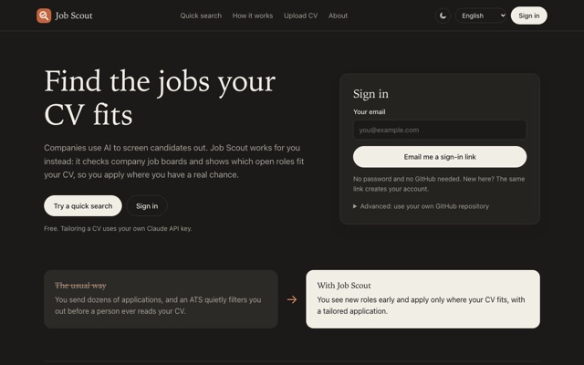

Job Scout
Checks companies’ own job boards (Greenhouse, Ashby, Lever, Workable, SmartRecruiters) and shows which open roles fit your CV. The quick search runs in the browser, so the CV is not uploaded anywhere.
Stack Claude API, GitHub Actions